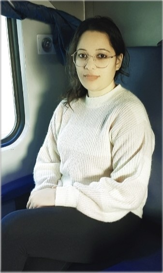

Simranjit Kaur
Web Developer
Summary
I did graduation in B.Tech computer science and wants to become a web developer. I currently live in Haryana, India. I am seeking opportunities where I can utilize my existing knowledge for the betterment of the organization as well as learn new skills to enhance my potential and flourish myself professionally.
Education
Masters of Science (2021-2023)
- Institute: UIET, KUK
- Stream: Computer Science
Bachelor of Technology (2012-2016)
- Institute: UIET, KUK
- Stream: Computer Science
Work Experience
Associate data Entry Operator
January 2022 - March 2023
- Spearheaded all data entry duties and
responsibilities for Prepp team at CollegeDunia.
- Uploaded news, silos at Prepp website.
- Look after all the Prepp APP work including
uploading quiz, Current Affairs, news, and MCQs.
- Maintain some Prepp website pages on daily basis.
- Used MS Office daily, including Excel sheets.
Skills
Hard Skills
- HTML 5
- CSS 3
- JavaScript
- C
- C++
- Visual Basics 6.0
- MS-Office
Soft Skills
- Teamwork
- Leadership
- Time Management
- Problem Solving
Hobbies
- Photography
- Reading Books
- Sketching
- Travelling
Contact
LinkedIn
Send Email